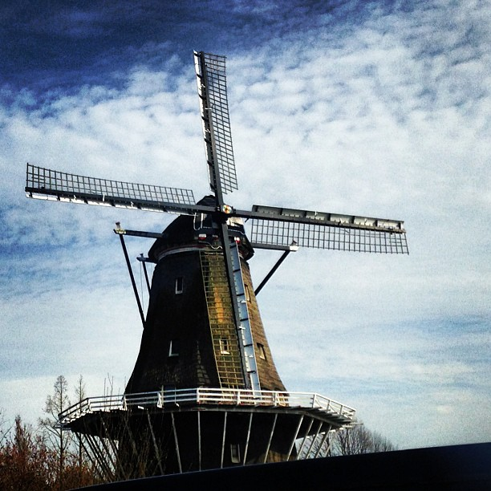
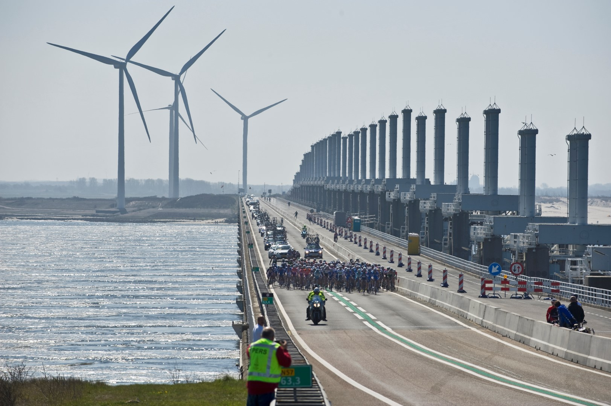
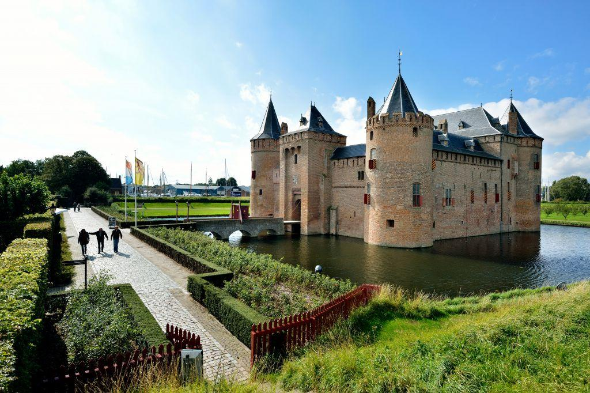
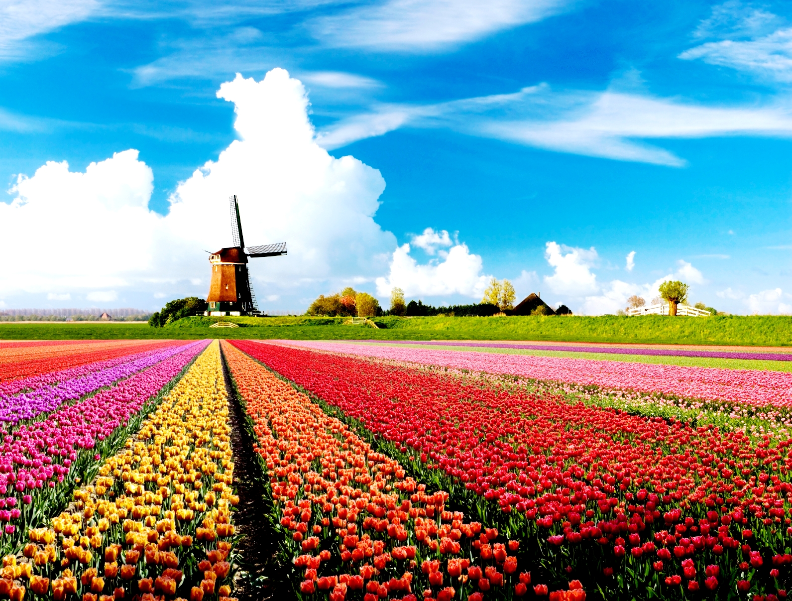
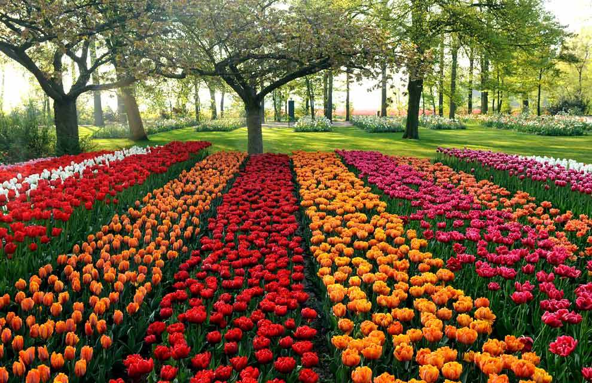
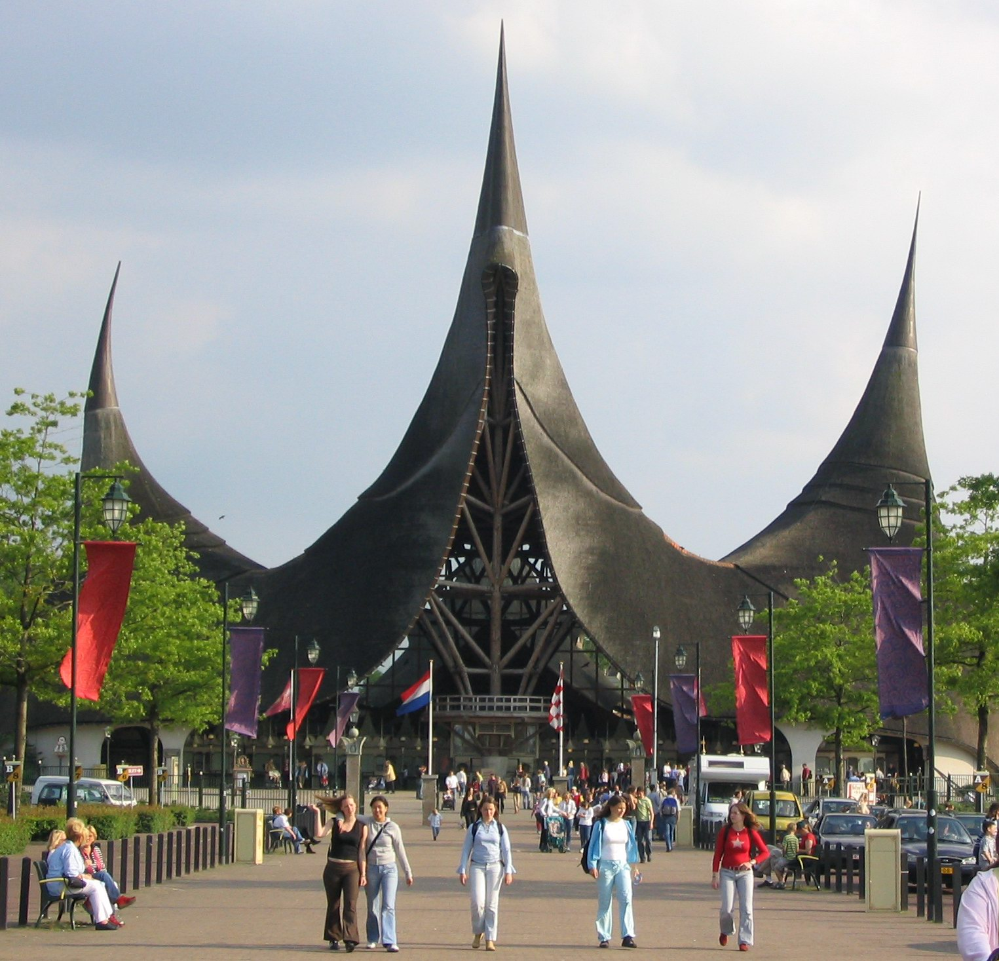

OLANDA.COM , PER LE TUE PRENOTAZIONI AFFIDATI AI MIGLIORI!
_____________________________________
BENVENUTI
VI AUGURIAMO BUONE VACANZE IN OLANDA
In Olanda vivrai una fantastica esperienza grazie alle bellissime infrastrutture
e ai magnifici paesaggi delle terre olandesi
Ci sono tantissime attrazioni turistiche tra cui :
I POLDERS

Gli olandesi sono molto innovativi quando si tratta di tenere a bada l’acqua. Per strappare nuove terre alle acque hanno costruito dighe,
fortificazioni e soprattutto mulini a vento e ad acqua. Il mulino più antico è un mulino ad acqua che risale all'ottavo secolo.
Queste tecniche venivano usate per bonificare centinaia di laghi e paludi ed evitare l'allagamento delle terre.
I mulini a vento in Olanda sono caratteristici del paesaggio nazionale e rappresentano un simbolo della lotta contro l'acqua
di qualsiasi viaggio nei Paesi Bassi.
I mulini vennero utilizzati fino al 1500 per poi essere rimpiazzati dai moderni sistemi di drenaggio.
I piu' famosi in Olanda sono quelli di Kinderdijk e di Schiedam.
LE DIGHE OLANDESI

Gli olandesi hanno una relazione speciale con l'acqua. Da sempre devono proteggere il loro piccolo paese dall'acqua,
poiché gran parte dell'Olanda si trova sotto il livello del mare.
Ma già secoli fa gli olandesi erano famosi per i loro viaggi esplorativi per mare. O
Oggi invece sono conosciuti soprattutto per i progetti che consentono i proteggere molti paesi del mondo dall'acqua , e questo
lo possiamo notare dalle imponenti dighe presenti nel paese.
Vi sono la Afsluitdijk e la De Nieuwe Waterweg oppure la grandissima Neeltje Jans (delta Expo) una delle piu' grandi dighe al mondo.
Quest’ultima è a 65 km da Rotterdam e si puo' percorrere a piedi internamente o esternamente.
I CASTELLI OLANDESI
In Olanda ci sono dei bellissimi castelli da poter visitare. Essi si reggono in piedi ancora dai tempi medievali
e sono un'opera d'architettura mediavale indiscussa grazie al loro aspetto imponente che ci fa subito ricordare
le fortezze di quei tempi antichi.
Due sono nei dintorni di Amsterdam: il Muiderslot e il Kasteel De Haar.
IL CASTELLO MUIDERSLOT

Il Muiderslot è di origine medievale e fu utilizzato anche come prigione fino al 1600.
Esso è uno dei castelli medioevali più pittoreschi dell'Olanda. Con la sua lunga e ricca storia,
il castello è ora un museo nazionale aperto al pubblico e offre l'occasione di esplorare le sue maestose stanze
(restaurate nello stile originale del Seicento) e le sue collezioni di armi e armature.
Questa fortezza alla foce del fiume Vecht fu costruita attorno al 1280 dal Conte Floris V. Subito dopo, nel 1296,
il castello venne distrutto dal Vescovo Willem van Mechelen. Nel 1380, il nuovo castello fu costruito sulle rovine di quello precedente. Attualmente, quasi 600 anni più tardi, il castello si trova in condizioni ottimali e ogni anno viene frequentato da migliaia di curiosi visitatori che desiderano immedesimarsi nel ruolo di cavaliere o damigella per un giorno.
IL KASTEEL DE HAAR
Il Kasteel De Haar si trova nei dintorni di Utrecht e assomiglia molto ai castelli delle fiabe.
Puoi visitare il Castello de Haar solo seguendo una visita guidata.
La guida ti racconterà tutto sulla costruzione del castello e sugli interni. Scoprirai inoltre interessanti aneddoti
sulla storia del castello e sul legame con la famiglia Van Zuylen.
I bambini si trasformano durante una visita guidata appositamente ideata per bambini in cavalieri e principesse.
I CAMPI DI TULIPANI


I tulipani in Olanda sono considerati al pari di un monumento da visitare.Vi sono molte zone dove potrete ammirare la fioritura dei bulbi, quella più rinomata è il Bloembolenstreek,
nei dintorni di Haarlem e Leiden dove si estendono chilometri e chilometri di campi fiorati.
Dalla fine di marzo alla seconda settimana di maggio si può assistere alla fioritura dei campi.
La fine di marzo segna l'inizio della fioritura del croco, seguito dai narcisi e dai primi tulipani all'inizio di aprile.
Da metà aprile cominciano a fiorire i giacinti. E da metà aprile alla prima settimana di maggio i tulipani sono in piena fioritura.
I campi di piante da bulbo più noti si trovano alle spalle delle dune del Mare del Nord, tra Leida e Den Helder e nel parco nazionale
di Keukenhof
PARCO GIOCHI DI EFTELING

Oltre a cio', in Olanda è possibile visitare il parco giochi di Efteling.
Verranno riprese tematiche fiabesche vista la presenza di elfi e troll.
Un mondo di divertimento per i bambini e per i ragazzi.
Ci auguriamo che i turisti che scelgono il nostro paese come meta di viaggio godano
al meglio di tutto ciò che il nostro paese offre. Vi auguriamo buon divertimento